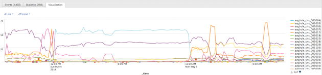

Show search and navigation tools
This document describes methods and operations of how an external Security Information and Event Management System (SIEM) can receive security events and operational data from the SmartWall Corero Management Server (CMS) in a Syslog format. Corero is open to discussions with partners who are interested in receiving events through both mechanisms for a tighter integration.
The Corero CMS that manages a set of Network Bypass, Threat Defense, and Forensics appliances can send operational, forensics, and event data to SIEMs via syslog messages. The overall message is carried in a format specified by syslog reporting protocol (RFC 3164), but the details of the contents are provided in this document. The figure below shows an example of a Splunk dashboard created from the the CMS via syslog over a period of time. Based on the types of events, a dashboard like this can provide insight into the types of attacks and unwanted traffic that may be encroaching a customer network.

Example of Attack Analysis in a Customer Network